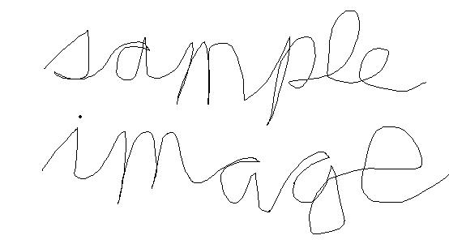
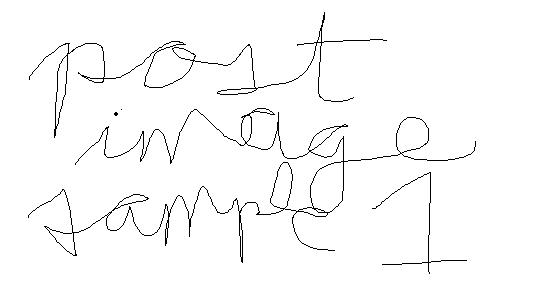
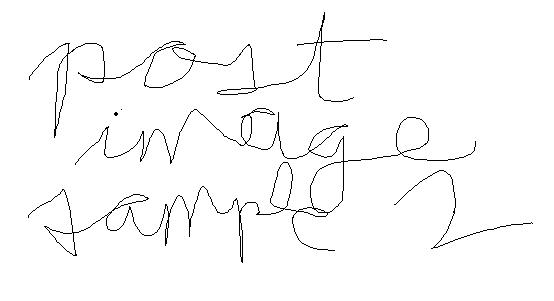
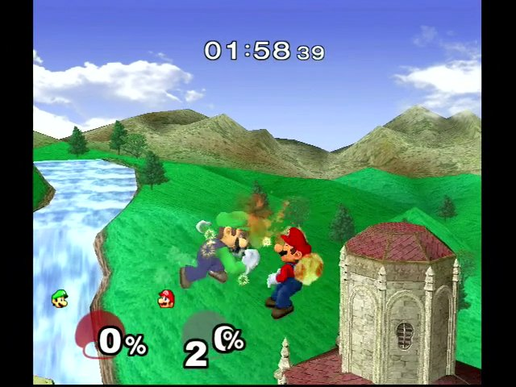
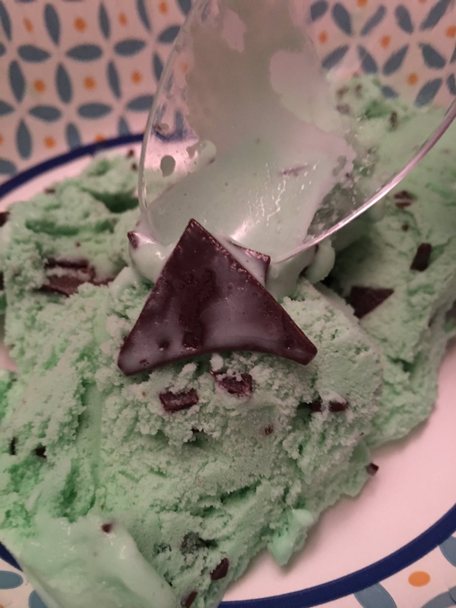
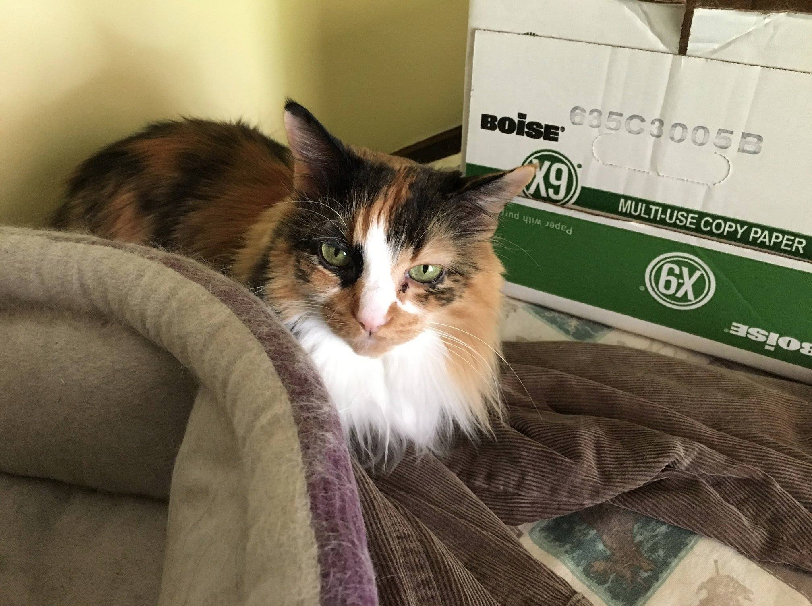
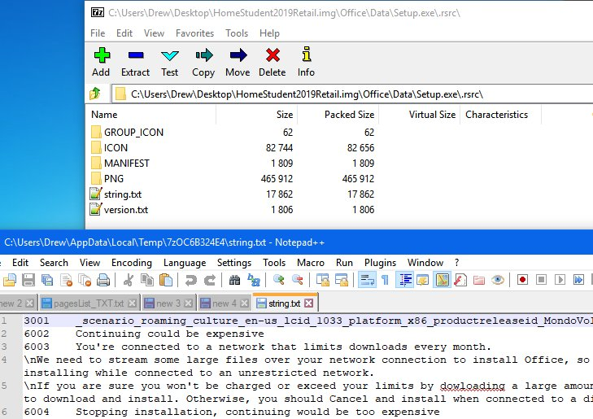

Display name here @YourHandleHere •
Original post date here
Display name here @YourHandleHere •
Original post date here
This is a basic sample post. Most Tweets are probably going to be able to be based off this one. Since this is the post at the top of the page, I'll explain a few things. Be sure to look at the code to know what's going on. So in the code, I have the date link to the original post on Twitter using the Tweet ID that's in the Twitter URL for each Tweet and given to you underneath each Tweet in the backup. I'm also using that ID to allow linking directly to posts from elsewhere on this website by using section IDs which work like HTML anchors, if you're used to that. Try it out by clicking "jump to this post" below, next to the Retweets and Likes area. Please keep the class-related stuff there, as I'm going to make a CSS file that'll make this all look a lot better after archiving all my posts. Note that I'm putting the numbers for Retweets and Likes in code blocks to ensure that, say, zeroes will be easily differentiated from capital O.
Retweets: 0 Likes: 0
(jump to this post)
Tweets archive website template
A description of your Tweets archive website. This could include your Twitter bio too, if you want. Remember to add your profile picture to the archive as "avatar.jpg" next to "index.html" so that the profile picture shows up correctly. If it's not a .jpg, you have to do a find-and-replace on "avatar.jpg" with "avatar.png" (or whatever the extension is for you). Also be sure to read the example posts below so you know how this template works. Template created by Drew Naylor and the code is under the MIT License. You can fork this repo if you want to create your own Tweets archive website. Please only archive your own Tweets and those you have permission to archive. If you want to, you can put additions to posts that weren't there originally in italics.
 Display name here @YourHandleHere •
Original post date here
Display name here @YourHandleHere •
Original post date here
If you have multiple posts that were immediately Tweeted one after the other and you want them to appear together in the archive, you can...
(next post joined in archive as reply;
link to post)
...use this post as an example for how to do that, but note that if posts other than the original have Retweets or Likes, those aren't handled here as I had neither on the original post this was based on, so you'll have to add that in yourself.
Retweets: 0 Likes: 0
(jump to this post)
 Display name here @YourHandleHere •
Original post date here
Display name here @YourHandleHere •
Original post date here
#hashtags and @handles appear as plain text like everything else and aren't links, unless you want them to be by manually linking them somewhere.
Retweets: 0 Likes: 0
(jump to this post)
 Display name here @YourHandleHere •
Original post date here
Display name here @YourHandleHere •
Original post date here
Image posts just have images below the post text like Twitter, but there's no built-in code for opening the image when clicked (you can put it in though, if you want; just trying to get my archive done as soon as possible; competent browsers like Firefox do allow you to right-click and click "Open image in new tab", give or take a few wording changes). I try to just have the image size be large enough to see whatever I want to be shown (Twitter's image preview is 497 on the width based on what the backup website's image elements told me with Inspect Element), then it can be zoomed in more if desired. I also include alt text with images.

Retweets: 0 Likes: 0
(jump to this post)
 Display name here @YourHandleHere •
Original post date here
Display name here @YourHandleHere •
Original post date here
This post will be linked to by a post further down as an example of an archived version of quote-Retweeting yourself.
Retweets: 0 Likes: 0
(jump to this post)
 Display name here @YourHandleHere •
Original post date here
Display name here @YourHandleHere •
Original post date here
You can have links appear in archived Tweets like so. This one has been left as-is from my original post, so enjoy an article on supporting Net Neutrality.
Netflix joins Amazon and Reddit in Day of Action to save net neutrality - Ars Technica
Retweets: 0 Likes: 0
(jump to this post)
 Display name here @YourHandleHere •
Original post date here
Display name here @YourHandleHere •
Original post date here
Sometimes you might need to have more than one image in a post, and this is an example of that case.


Retweets: 0 Likes: 0
(jump to this post)
 Display name here @YourHandleHere •
Original post date here
Display name here @YourHandleHere •
Original post date here
Sometimes you might've quote-Retweeted something but the original post is gone now so you can't
even write what the original post was about. You can do what I did here in the italics below, if you want.
(link to something I quote-retweeted but is no longer available so I have no idea what it said)
Retweets: 0 Likes: 0
(jump to this post)
 Display name here @YourHandleHere •
Original post date here
Display name here @YourHandleHere •
Original post date here
Sometimes you might quote-Retweet yourself, so you can do this to preserve the experience mostly:
pretend this is a quote-retweet of a previous post I made; jump to original post
Retweets: 0 Likes: 0
(jump to this post)
 Drew Naylor @DrewTNaylor •
June 14, 2018
Drew Naylor @DrewTNaylor •
June 14, 2018
The other night, I had a dream where I learned
that the way to remove malware from an external hard drive was to plug
it into a computer that didn't have software on it that would immediately
remove the virus. It was very important that the computer had time to scan it first.
Retweets: 0 Likes: 0
(jump to this post)
 Drew Naylor @DrewTNaylor •
June 17, 2018
Drew Naylor @DrewTNaylor •
June 17, 2018
Been about four years (since I've seen him last,
which is a good thing. And I don't ever have to legally see him again
ever since I turned 18.) #WhyMyDadRocksIn4Words
Retweets: 0 Likes: 0
(jump to this post)
 Drew Naylor @DrewTNaylor •
June 17, 2018
Drew Naylor @DrewTNaylor •
June 17, 2018
To be honest with everyone, I don't see the point
of it when he's a terrible person. Mothers Day is much better, especially
when she understands your needs even though you haven't been diagnosed with
autism (again, I didn't know the guy who named the other diagnosis was
a nazi at the time of posting) yet when you were only a few years old. #FathersDay
Retweets: 0 Likes: 0
(jump to this post)
 Drew Naylor @DrewTNaylor •
August 10, 2018
Drew Naylor @DrewTNaylor •
August 10, 2018
Surprisingly powerful in the air even with
a floaty jump while not very good on the ground. Except that he
has a very powerful move if done while in contact with the opponent.
This move does more damage on the ground, but can be done in the air. #ExplainACharacterBadly

Retweets: 0 Likes: 0
(jump to this post)
 Drew Naylor @DrewTNaylor •
August 11, 2018
Drew Naylor @DrewTNaylor •
August 11, 2018
I wonder which piece of the Triforce this is.

Retweets: 0 Likes: 0
(jump to this post)
 Drew Naylor @DrewTNaylor •
September 19, 2018
Drew Naylor @DrewTNaylor •
September 19, 2018
Wondering why I haven't posted anything
myself lately (except for the Internet Defense League Tweets
Twitter "app" thing)? Well, I wrote this on my Facebook page:
(link to my Facebook page explaining my absense; post is copied below)
Click to view the full post copied from Facebook.
I didn't want to post this, but I know how much my friends
liked Mitty and I figured that I should post this before too
long so that people know why I haven't been posting anything
on Facebook, Twitter, YouTube, and Vimeo. I also didn't want
to post anything until this particular post was public. I've
already cried a lot (and still do), so I think I'm ready to
post this. I'll get to birthday posts after this is up; Mitty
is still more important to me personally.
My last post on Facebook and Twitter was on August 11, 2018,
at 1:36 AM and it was a picture of ice cream (not that it matters).
I decided to post that image before going to bed in case I didn't get
a chance to later because of a delay. Well, I was delayed.
Later that day (August 11), Mitty was having trouble standing up on
her own. Eventually she was able to run over to the chair and jump
up onto the table to look outside. She had been laying down on the
shelf in the back bathroom and I was concerned that she hadn't been
eating or drinking water since she looked sick and complained when
my mom touched her stomach area. Because of this, my mom and I got
her some soft food (she couldn't easily eat the hard food) and a
bowl of water and she ate while purring, then she drank some water.
I thought she was fine because she ate and drank water
(quite a bit of both), so I sat down on the couch to watch
some YouTube videos and my mom sat down in the chaselounge.
However, several minutes later, I started hearing cat food
falling on the floor and it turned out that Mitty was
falling onto her side and couldn't get back up on her own.
My mom brought Mitty over to the chaselounge and I went
over and sat down on the end of it. A few seconds later,
Mitty crawled over to my lap and laid across it.
At this point, we decided to take her to the vet to see
what was wrong. I thought it was that she was constipated
because she hadn't been using the litter box for a few days
(based on what I could tell).
As it turned out, her liver was failing due to liver toxicity,
likely because of using chemical flea treatment on her twice
over the years. Last time we used it (several years ago),
she started getting seizures sometimes.
When my mom got back home, she put Mitty on my lap and
I covered her up and slept with her all night and talked
to her a lot, telling her how much she meant to me as
well as my friends. At one point when she was having trouble
moving her head around, she managed to look back and up toward me.
She left on August 12, 2018, at 8:13 AM. Afterward, I had to
change my shirt because her bladder didn't hold everything in, but that didn't bother me.
She was 12 years old and I got her as a kitten in June/July
2006 (wait, I think she was born in 2005 and was 13 years
old but I forgot while writing this) from my preschool
teacher. My mom and I came up with her name with the possibility
of her being a mitten-footed cat, but she wasn't one, though I
kept the name. She was the prettiest calico cat I'd ever seen,
and her fur was really soft, almost like silk.
I made sure to take a lot of pictures of her over the years,
and she's my profile picture for almost every account I have
online, except for my personal Facebook account (that's myself [not anymore, it's Luigi
again, which was my original Facebook profile picture]),
Steam (I'm still using the default image), my second YouTube channel
(that has a picture of myself, again [not anymore either, I changed
it to another picture of Mitty in late 2019 I think]),
a few other email accounts (including a public one on my website),
and my website's favicon (that one is of Mario because my old website
was mostly about games and stuff [not anymore, I changed it
to my main profile picture I use for like Mastodon and YouTube at some point]).
I even took the time to give a nice blur to the main picture I
use in Photoshop for my Dailymotion banner and dealt with getting
sick to my stomach for something that people won't look at for
more than five seconds (it took me maybe 30 minutes, more or less).
I also made sure to put her into as many of my videos as made
sense, so when she was in my way a little during one of them
(I think it was the Admin Batch Scripts video), I took a
picture of her and put it into the final video.
That'll be hard to watch when archiving it to Vimeo.
Additionally, I made a theme on my old laptop of pictures of
Mitty and that theme shows up in one of my oldest public
videos on YouTube. My Lumia 830 also features a picture of
her with a surrounding blur as the lock screen image.
I loved her probably more than anyone else would be
able to guess, and I know that my friends and family
(the people in my family that I'm comfortable with)
also liked her a lot. I don't know about the general
public's opinion of her was.
I didn't know anything was wrong until that Friday
when her nose was white instead of pink, and I didn't
want her to be scared of any of my friends or family
and have her try to jump down and hurt herself or hide
under the chair without being able to be near me for the
last night. Her being scared is why I didn't invite
anyone over, I'm sorry if you wanted to see her.
Chuggaaconroy knew that his cat Teddy was having
trouble for about 20 days before he left, so
Chuggaaconroy went to friends and family so that they could see Teddy.
If anyone wants to know more, I might make
additional posts with more information that
I feel comfortable with sharing. I can also
post pictures of Mitty that I have, in
addition to the one on this post and the ones I've already posted.

Retweets: 0 Likes: 0
(jump to this post)
 Drew Naylor @DrewTNaylor •
September 20, 2018
Drew Naylor @DrewTNaylor •
September 20, 2018
#MyDadUsedTo be a decent person.
Still haven't seen him in about three and a half years, and I don't care.
Retweets: 0 Likes: 0
(jump to this post)
 Drew Naylor @DrewTNaylor •
September 28, 2018
Drew Naylor @DrewTNaylor •
September 28, 2018
#WhenJekyllSleepsMrHyde... Also
sleeps. Because they're the same person.
Retweets: 0 Likes: 1
(jump to this post)
 Drew Naylor @DrewTNaylor •
October 2, 2018
Drew Naylor @DrewTNaylor •
October 2, 2018
#TheresGotToBe a destinyyy...
(I wish this hashtag was "#ItsGotToBe" because then I'd write "#ItsGotToBe my destinyyy...")
Retweets: 0 Likes: 0
(jump to this post)
 Drew Naylor @DrewTNaylor •
October 2, 2018
Drew Naylor @DrewTNaylor •
October 2, 2018
#DontComplicateThingsBy writing text to a WPF
textbox inside a UserControl in a Windows Forms app using the WPF
Host Control thing unless you really need to do this. It's not
very fun getting it to work. I've tried. I'm not even sure if all
the phrasing is correct here.
Retweets: 1 Likes: 1
(jump to this post)
 Drew Naylor @DrewTNaylor •
October 2, 2018
Drew Naylor @DrewTNaylor •
October 2, 2018
#INeedABeginnersGuideTo understand some mistakes.
Otherwise, I just don't know what went wrong! Especially when dealing with lightning.
Retweets: 0 Likes: 0
(jump to this post)
 Drew Naylor @DrewTNaylor •
October 11, 2018
Drew Naylor @DrewTNaylor •
October 11, 2018
• Hello!
• And... good-bye!
#HowNotToGreetGuests
Retweets: 0 Likes: 0
(jump to this post)
 Drew Naylor @DrewTNaylor •
October 11, 2018
Drew Naylor @DrewTNaylor •
October 11, 2018
• Come wel to house my. #HowNotToGreetGuests
Retweets: 0 Likes: 0
(jump to this post)
 Drew Naylor @DrewTNaylor •
October 12, 2018
Drew Naylor @DrewTNaylor •
October 12, 2018
Remember: If you're on a metered connection,
don't go over your limit by "dowloading" too many files while installing Office 2019.

Retweets: 0 Likes: 0
(jump to this post)
 Drew Naylor @DrewTNaylor •
October 23, 2018
Drew Naylor @DrewTNaylor •
October 23, 2018
#EverybodyShouldGet the opportunity to buy a
version of Windows 10 that DOESN'T have telemetry/spyware and forced automatic updates.
Retweets: 0 Likes: 0
(jump to this post)